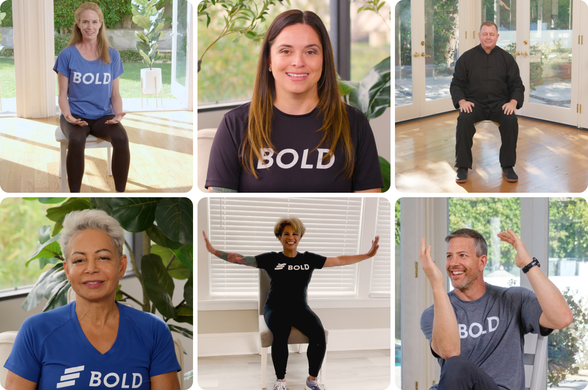

Simple clear daily actions that adapt to your feedback.
Goal: Improve balance and reduce risk of falls
Duration: 20-minute sessions, building gradually over time
Focus: Gentle balance and stability training through standing exercises
Accommodations: No equipment needed. All exercises include seated modifications.